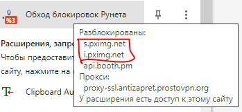
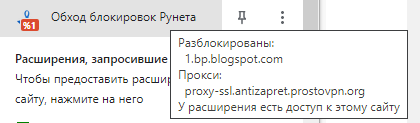

Здравствуйте, есть 2 довольно популярных, интересующих меня ресурса, блокировка по которым не исполняется в полной мере на территории РФ, это аниме сайты:
pixiv. net
iwara. tv
Столкнулся с ограничением в 2 ссылки для новичков, так что все проверки и доказательства перенёс сюда https://github.com/pyplyn/Postero_ATG_Zebra/issues/1
полная версия сообщения.
Интересует 2 сайта, который стали медленно работать при использование списка АнтиЗапрета, при том, что они в большинстве точек России не заблокированыpixiv.net
Действительно в реестре находится огромное количество страниц, но основной домен не заблокирован
в России есть пинг почти со всех нод [зеркало]iwara.tv
2 страницы вынесены из реестра, 1 осталась. Все “нападения” были в 2017 году
в России есть пинг почти со всех нод [зеркало]Считаю оба сайта можно вынести из списка “АнтиЗапрета”. Это можно сделать локально в фаерфоксе, но нельзя в плагине для хромиума, приходиться полностью отключать обход ограничения, что бы использовать эти сайты (скорость на иваре не позволяет без лагов смотреть ролики даже в 320p)
Жаль нет 100% способа отличить частично заблокированный сайт, без блокировки основного домена но всё же не работающий (как http://nicovideo.jp ) на isitblockedinrussia по нему вообще ничего не находит и всё же работающие сайты, частично прописанные в реестре, как 2 примера выше
Pixiv и iwara заблокированы по протоколу HTTP, все заблокированные ссылки уже не работают.
Убрал эти сайты, хоть они и сломаются у провайдеров, блокирующих сайты через DNS, например, у мобильного Теле2. Ну и поделом.
Жаль нет 100% способа отличить частично заблокированный сайт, без блокировки основного домена но всё же не работающий (как http://nicovideo.jp ) на isitblockedinrussia по нему вообще ничего не находит и всё же работающие сайты, частично прописанные в реестре, как 2 примера выше
Не пользуйтесь isitblockedinrussia, он некорректно работает: Результаты меняются из раза к разу · Issue #3 · deNULL/isitblockedinrussia.com · GitHub
niconicodouga внесён в реестр по протоколу HTTPS, из-за чего «заблокирован полностью».
Если вас не устраивает скорость работы, можете поднять антизапрет на своём сервере: https://antizapret.prostovpn.org/selfhosted.html
niconicodouga да - не работает нигде. А пикксив и ивара, сколько тестил - везде нормально, но вот именно на теле 2 не доводилось
Спасибо за исключение сервисов)
Ну вот примерно когда вы убрали pixiv (оттуда откуда убрали), он у меня и сломался, хотя до этого работал без вопросов. Вернуть нельзя? XD
СПб, провайдер – SkyNet / sknt.ru, Firefox 80.0.1, в проксях автонастройка через proxy.pac, DNS over HTTPS была отключена (сейчас ни на что не влияет). Других средств обхода нет.
Перепробовал goodbyeDPI со всеми возможными настройками -– не пошло.
BlockCheck v0.0.9.8
Проверка работоспособности IPv6: IPv6 недоступен.
[O] Тестируем IPv4 DNS
Через системный DNS: [‘185.37.129.10’, ‘185.37.129.10’, ‘185.37.129.10’, ‘185.37.129.10’, ‘185.37.129.10’, ‘185.37.129.10’]
Через Google DNS: [‘104.18.182.1’, ‘104.18.183.1’, ‘104.26.10.39’, ‘104.26.11.39’, ‘104.26.4.231’, ‘104.26.5.231’, ‘172.67.70.38’, ‘172.67.70.99’, ‘195.8.215.136’, ‘195.82.146.214’, ‘208.100.28.56’, ‘67.202.114.141’]
Через Google API: [‘104.18.182.1’, ‘104.18.183.1’, ‘104.26.10.39’, ‘104.26.11.39’, ‘104.26.4.231’, ‘104.26.5.231’, ‘172.67.70.38’, ‘172.67.70.99’, ‘195.8.215.136’, ‘195.82.146.214’, ‘208.100.28.56’, ‘67.202.114.141’]
Несуществующий DNS не вернул адресов (это не ошибка)
[ ] DNS-записи подменяются
] DNS-записи подменяются
[✓] DNS не перенаправляется
[O] Тестируем HTTP (по настоящим IP-адресам сайтов)
Открываем http://a.putinhuylo.com/
[✓] Сайт открывается
Открываем http://furry.booru.org/
[ ] Получен неожиданный ответ, скорее всего, страница-заглушка провайдера. Пробуем через прокси.
] Получен неожиданный ответ, скорее всего, страница-заглушка провайдера. Пробуем через прокси.
[ ] Сайт не открывается через прокси
] Сайт не открывается через прокси
Проверяем доступность через isupme
[⁇] Неожиданный ответ от isupme, код 403
Открываем The Big ImageBoard (TBIB) - beach bird breasts cleavage copyright request day drink hat highres medium breasts mitsumi misato parrot solo straw hat sun hat tropical drink umbrella | 111173
[ ] Сайт не открывается, пробуем через прокси
] Сайт не открывается, пробуем через прокси
[ ] Сайт не открывается через прокси
] Сайт не открывается через прокси
Проверяем доступность через isupme
[⁇] Неожиданный ответ от isupme, код 403
Открываем http://pboorucom/
[ ] Сайт не открывается, пробуем через прокси
] Сайт не открывается, пробуем через прокси
[ ] Сайт не открывается через прокси
] Сайт не открывается через прокси
Проверяем доступность через isupme
[⁇] Неожиданный ответ от isupme, код 403
Открываем http://pboorucom/index.php?page=post&s=view&id=303026
[ ] Сайт не открывается, пробуем через прокси
] Сайт не открывается, пробуем через прокси
[ ] Сайт не открывается через прокси
] Сайт не открывается через прокси
Проверяем доступность через isupme
[⁇] Неожиданный ответ от isupme, код 403
Открываем http://rutrackerorg/forum/index.php
[✓] Сайт открывается
[O] Тестируем HTTPS
Открываем https://e621.net/
[ ] Сайт не открывается
] Сайт не открывается
Открываем https://lolibooru.moe/
[ ] Сайт не открывается
] Сайт не открывается
Открываем https://rutrackerorg/forum/index.php
[✓] Сайт открывается
Открываем https://www.dailymotion.com/
[✓] Сайт открывается
[O] Тестируем обход DPI
Пробуем способ «дополнительный пробел после GET» на pboorucom
[ ] Сайт не открывается
] Сайт не открывается
Пробуем способ «заголовок hOSt вместо Host» на pboorucom
[ ] Сайт не открывается
] Сайт не открывается
Пробуем способ «заголовок hoSt вместо Host» на pboorucom
[ ] Сайт не открывается
] Сайт не открывается
Пробуем способ «значение Host БОЛЬШИМИ БУКВАМИ» на pboorucom
[ ] Сайт не открывается
] Сайт не открывается
Пробуем способ «необычный порядок заголовков» на pboorucom
[ ] Сайт не открывается
] Сайт не открывается
Пробуем способ «отсутствие пробела между двоеточием и значением заголовка Host» на pboorucom
[ ] Сайт не открывается
] Сайт не открывается
Пробуем способ «перенос строки в заголовках в UNIX-стиле» на pboorucom
[ ] Сайт не открывается
] Сайт не открывается
Пробуем способ «перенос строки перед GET» на pboorucom
[ ] Сайт не открывается
] Сайт не открывается
Пробуем способ «табуляция в конце домена» на pboorucom
[ ] Сайт не открывается
] Сайт не открывается
Пробуем способ «точка в конце домена» на pboorucom
[ ] Сайт не открывается
] Сайт не открывается
Пробуем способ «фрагментирование заголовка» на pboorucom
[ ] Сайт не открывается
] Сайт не открывается
Пробуем способ «фрагментирование заголовка, hoSt и отсутствие пробела одновременно» на pboorucom
[ ] Сайт не открывается
] Сайт не открывается
Пробуем способ «дополнительный пробел после GET» на rutrackerorg
[✓] Сайт открывается
Пробуем способ «заголовок hOSt вместо Host» на rutrackerorg
[✓] Сайт открывается
Пробуем способ «заголовок hoSt вместо Host» на rutrackerorg
[✓] Сайт открывается
Пробуем способ «значение Host БОЛЬШИМИ БУКВАМИ» на rutrackerorg
[✓] Сайт открывается
Пробуем способ «необычный порядок заголовков» на rutrackerorg
[✓] Сайт открывается
Пробуем способ «отсутствие пробела между двоеточием и значением заголовка Host» на rutrackerorg
[✓] Сайт открывается
Пробуем способ «перенос строки в заголовках в UNIX-стиле» на rutrackerorg
[✓] Сайт открывается
Пробуем способ «перенос строки перед GET» на rutrackerorg
[✓] Сайт открывается
Пробуем способ «табуляция в конце домена» на rutrackerorg
[ ] Сайт не открывается
] Сайт не открывается
Пробуем способ «точка в конце домена» на rutrackerorg
[ ] Сайт не открывается
] Сайт не открывается
Пробуем способ «фрагментирование заголовка» на rutrackerorg
[✓] Сайт открывается
Пробуем способ «фрагментирование заголовка, hoSt и отсутствие пробела одновременно» на rutrackerorg
[✓] Сайт открывается
[!] Результат:
[ ] Ваш провайдер подменяет DNS-записи, но не перенаправляет сторонние IPv4 DNS-серверы на свой.
] Ваш провайдер подменяет DNS-записи, но не перенаправляет сторонние IPv4 DNS-серверы на свой.
Вам поможет смена DNS, например, на Яндекс.DNS 77.88.8.8 или Google DNS 8.8.8.8 и 8.8.4.4.
[ ] Ваш провайдер полностью блокирует доступ к HTTPS-сайтам из реестра.
] Ваш провайдер полностью блокирует доступ к HTTPS-сайтам из реестра.
[ ] isupme даёт неожиданные ответы или недоступен. Рекомендуем повторить тест, когда он начнёт работать. Возможно, эта версия программы устарела. Возможно (но маловероятно), что сам isupme уже занесён в чёрный список.
] isupme даёт неожиданные ответы или недоступен. Рекомендуем повторить тест, когда он начнёт работать. Возможно, эта версия программы устарела. Возможно (но маловероятно), что сам isupme уже занесён в чёрный список.
[ ] Если проигнорировать isupme, то у вашего провайдера “полный” DPI. Он отслеживает ссылки даже внутри прокси, поэтому вам следует использовать любое шифрованное соединение, например, VPN или Tor.
] Если проигнорировать isupme, то у вашего провайдера “полный” DPI. Он отслеживает ссылки даже внутри прокси, поэтому вам следует использовать любое шифрованное соединение, например, VPN или Tor.
Попробуйте сменить DNS с провайдерского на какой-то другой, например, на 8.8.8.8.
Это помогло, правда только через DNS over HTTPS с Cloudflare, DoH через NextDNS не робил.
Лучше сменить непосредственно на роутере или в настройках ОС, а не в браузере. DoH не очень хорошо работает с PAC-листами.
Ну пока сменил в настройках адаптера. Если получится/не получится на микротике моём - сообщу.
Да, сработало и через микротик.
Хотя в обоих вариантах слегка страдает скорость.
Дов**бы#ся((((
{kind=link}
Здравствуйте ValdikSS возможно пора добавить ecchi.iwara.tv
согласен. Главное без домена с самим контентом megurine.iwara.tv по тому что он не находиться в реестре! А грузить сами видео через прокси в сентябре, когда я писал эту тему, было просто невозможно медленно
Готово, ecchi.iwara.tv опять проксируется.
Пожалуйста, добавите в исключения эти псубдоменны pximg.net - из-за их проектирования пиксив полумёртвый

Попало из-за налётов на booth reestr.rublacklist.net/search/?q=pximg.net
Готово.
и снова здравствуйте)
bp.blogspot.com внесёны все через http и в проксировании не нуждается + это вообще кусок гугла

Исключение для него сделать проблематично.
Pixiv.net снова добавлен в список (вернее, убран из списка исключений) по причине попадания в реестр по HTTPS-ссылке, что привело к блокировке всего ресурса.
Реестр запрещенных сайтов
думаю до конца месяца ту удалённую картинку уже открутят.
iawra провела реорганизацию и теперь сидит на Cloudflare с другим ip. Но её могут опять внести, требования они точно выполнять не собираться, а систему разграничений им делать уже очень поздно.
Спасибо разработчикам расширения за белый список, а РКН (сквозь зубы) за невнимательность по отношению к многочисленным ip сложных систем)
ValdikSS
Здравствуйте. Сейчас сложное время, но возможно можно исправить ситуацию с iwara. Если раньше ркн внес по https субдомен ecchi.iwara.tv то 23 марта в блок по https попал весь iwara.tv https://reestr.rublacklist.net/search/?q=iwara
Теперь соответственно не работают ни изображения, ни видео.
Лист обновиться в течение 6 часов.
Здравствуйте, nicovideo.jp не работает в firefox без внесения в список исключений субдомена nvapi.nicovideo.jp (он кстати не заблокирован)
Я даже не часто туда захожу, просто стало интересно, наплодил уже 2 темы nicovideo фейлиться на любом видео | Форум Mozilla Россия и www.nicovideo.jp - video or audio doesn't play · Issue #120006 · webcompat/web-bugs · GitHub
Посоветовали открыть сети и там увидел проблему с подключением к nvapi.nicovideo.jp ну и да, эта проблема и препятствует воспроизведению на 3 компьютерах, позже ещё на 4 машине попробовал на максимально чистейшем фаерфокс через сторонний ВПН отдельной программой и все ровно получил ошибку. В хроме всё окей с самого начала.
Добавьте пожалуйста субдомен nvapi в исключения
chan.kemono.party не заблокирован, но вот зато ip прокси на нём заблокирован для создания новых постов